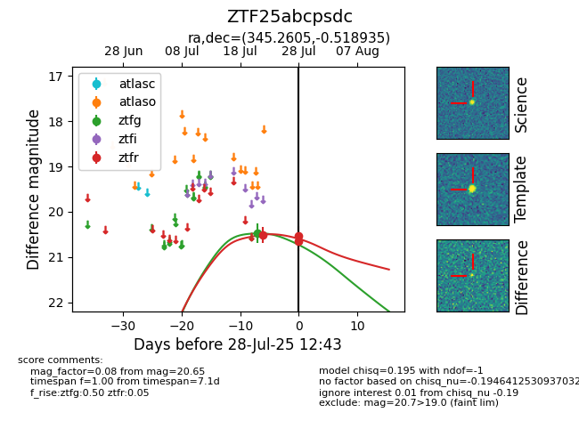

Target ZTF25abcpsdc at 2025-07-28 12:43, see:
FINK: fink-portal.org/ZTF25abcpsdc
Lasair: lasair-ztf.lsst.ac.uk/objects/ZTF25abcpsdc
ALeRCE: alerce.online/object/ZTF25abcpsdc
alt names
ZTF25abcpsdc (ztf,fink)
coordinates:
equatorial (ra, dec) = (345.2605,-0.51893)
galactic (l, b) = (73.4575,-52.44940)
photometry
last ztfg=20.48, ztfr=20.65
1 ztfg, 3 ztfr detections
